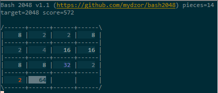

[bash] bashで2048ゲーム¶
bash2048 はbashで動く 2048ゲーム です。
インストール＆実行¶
$ cd /usr/local/games/
$ git clone https://github.com/mydzor/bash2048.git
$ cd bash2048
$ ./bash2048.sh
bash2048 はbashで動く 2048ゲーム です。
$ cd /usr/local/games/
$ git clone https://github.com/mydzor/bash2048.git
$ cd bash2048
$ ./bash2048.sh